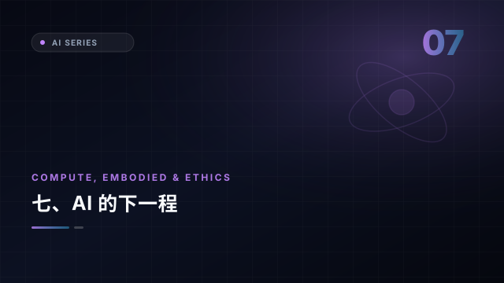

七、AI 的下一程：算力的账、走出屏幕的智能与治理的规则
AI 的下一程看三件事：算力的账、走出屏幕的智能、治理的规则；系列收尾落回终身学习与人机协同。

2025 年 1 月 27 日，英伟达市值单日蒸发约 5890 亿美元，创下当时全球公司单日市值损失的纪录，导火索是一份技术报告——DeepSeek 在其中把 V3 正式训练一次的算力账，按算力租用成本折算，压到了 557.6 万美元量级（这个数只含那一次正式训练，不含前期研究和失败实验，第五篇拆过口径）。一家卖算力的公司一天跌掉近六千亿，一家用算力的公司说训练没花多少钱。那天市场用恐慌投了一次票，我盯着新闻刷了一晚上，越刷越觉得大家盯错了地方。
这一轮 AI 往下走，最硬的约束已经不在模型里，在电表上。 模型能力的新闻每周都有，电的新闻才有分量。这篇是系列收尾，接住上一篇结尾留下的三问：算力的账怎么算，AI 什么时候走出屏幕，规则由谁来定。三件事中间还横着一道绕不开的坎——AGI 到底还有多远，吵不清它，规则就没法定，所以单独放在治理前头说。想清楚这些，再回头说我们自己。
算力的账，最后记在电表上
先给结论一个坐标。IEA（国际能源署）2025 年 4 月的《能源与 AI》报告：2024 年全球数据中心用电约 415 太瓦时，折合约 4150 亿度，占全球用电量 1.5% 上下；到 2030 年预计增至约 945 太瓦时，占比突破 3%，其中 AI 相关需求涨得最快。单看占比，3% 远够不上「烧穿电网」；吓人的是斜率——几年翻一倍多，而电网扩容是按年计的，美国不少新建数据中心正在排队等接入。
最诚实的证据，来自 AI 公司自己的环保账本。微软 2024 年环境报告：全口径排放比 2020 年基线上升 29.1%，主因是数据中心建设与硬件供应链；谷歌 2024 年报告：2023 年排放比 2019 年高 48%，次年更新到 51%。两家都把碳中和目标定在 2030 年，如今被自家的 AI 扩张顶在了墙上。效率提升了，为什么总账反而更难看？微软 CEO 纳德拉公开引用了经济学里的杰文斯悖论——19 世纪的观察：蒸汽机越高效，煤耗不降反升，因为用得越省、用得越广。这个类比套在 AI 算力上是否成立，经济学界没有定论，但「效率刺激需求」的机制是真实存在的。
工程这边也没闲着：同样一次训练，GPT-3 当年耗电约 128.7 万度（Patterson 等人 2021 年论文的口径），如今的效率派按云算力租用价折算，已把单次正式训练压到数百万美元量级——前者算的是电量物理消耗，后者算的是商业云算力租用成本；散热与供电这两本物理硬账，也在倒逼工程方案重做设计。
散热是第一道物理关，风冷已经到顶了。 风冷单机柜的散热上限约 20–40 kW，而英伟达 GB200 NVL72 单柜满载约 120 kW，差着三倍——风冷物理上压不住。液冷（用液体代替空气带走热量：冷板式让冷液贴着芯片走管路，浸没式干脆把整机泡进不导电的冷却液）从可选项变成必选项，赛迪顾问口径，2025 年中国液冷数据中心市场规模约 159.8 亿元。供电侧则看第五篇提过的 PUE（电能利用效率，越接近 1 越省电）。东数西算给东部和西部枢纽定下的红线分别是 1.25 和 1.2，但按国家数据局 2025 年 3 月披露的口径，枢纽集群平均约为 1.3——离全面达标还有距离；好在先进样本最低压到 1.04，说明极限做得到，普及还没到。部分先进数据中心的绿电使用率达 80% 左右，方向成立，账还欠着进度。
算力的账不能只算单次，也不能只算总量，得算「单位智能的能耗」。 「AI 必然烧穿电网」和「效率永远追得上需求」，都把话说满了：总量的确在涨，绿电出力与用电高峰的错配也的确是真约束。这门账最后能不能算平，取决于单位智能的能耗能不能持续往下走——2025 年的两条路线各自交了答卷，效率派拿出 DeepSeek，规模派拿出更大的集群，谁也没有认输。
走出屏幕：口袋里的小模型，和扭秧歌的机器人
比大集群更值得盯的走向，是 AI 往小处、往近处长。云边端协同把算力分成三层：云端管训练和重推理；边缘是园区、基站机房级的就近节点，管低时延推理和数据预处理；端侧是手机、汽车、摄像头上的芯片直接跑模型。三个动机都不玄：时延，云端来回几十上百毫秒，端侧省掉网络往返，响应快上一两个量级；带宽，原始视频全量回传太贵，边缘先筛一遍；隐私，数据不出设备。
端侧的天花板我摸过。我这台 8 GB 显存的电脑跑蒸馏小模型，生成长文本时一个字一个字往外蹦——桌面尚且如此，手机上内存、电池、散热卡得更死。头部厂商给的答案是分层：端侧系统在手机本地跑约 3B（约 30 亿参数）的小模型处理摘要这类轻任务，复杂的才上传到自建的私有云计算服务器。IDC 口径，2025 年中国市场 AI 手机出货超 1.18 亿台，占比约 40.7%——端侧 AI 不是未来时，是现在时。但要顺手破一个营销误会：「把大模型塞进手机」从来是修辞，塞进去的都是裁剪过的小模型，靠端云分层才兼得速度和隐私。监管也在给这件事立规矩：网信办的备案公告从 2026 年起单列手机端侧模型，7 至 8 月那批有 7 款，9 月又公告 3 款、点名荣耀 YOYO Claw——端侧从技术演示走向持证上岗。
比「小」更重要的趋势，是「专」。华为云盘古气象大模型 2023 年 7 月登上《Nature》，用 39 年的再分析气象数据训练，中期预报精度对标欧洲中期天气预报中心的数值预报系统，推理快上万倍；谷歌 DeepMind 的 GraphCast 同年 11 月登上《Science》，约一分钟出未来 10 天全球预报，在 90% 的指标上超过传统数值预报——这是「垂直模型打平甚至超过专业系统」的标志性战例。国内更成建制：国家电网的光明大模型已覆盖 27 家省级电力公司，官方口径月调用量近亿次；南方电网 2023 年发布的大瓦特，管配网诊断、无人机巡检、客服。不过这里得留个问号：这些模型的公开性能数据以企业自述为主，我没查到独立第三方评测，行业里「重发布、轻落地」的批评也一直存在。
再往外一步，是给 AI 装上身体。2025 年除夕的央视春晚《秧BOT》，16 台宇树 H1 人形机器人身穿花袄，和真人同台扭秧歌、转手绢——我第一反应和很多人一样：具身智能成了。回头查资料，冷水也是真的：转手绢靠的是专用机械结构设计，而非通用灵巧手；动作多为预训练编排，自主决策的成分有限。这正是当下的缩影：大脑端，视觉、语言、动作一体的 VLA 模型进展飞快；身体端，欠账真多——莫拉维克悖论横在前面，对人轻而易举的拧瓶盖、叠衣服，对机器是另一个量级的难题；真机操作数据比互联网文本小几个数量级，是绕不开的硬约束。钱的动向也耐人寻味：Figure AI 2025 年 9 月完成超 10 亿美元 C 轮融资、投后估值 390 亿美元，而它的机器人还停留在车厂和仓库的试点阶段——估值与出货之间，隔着一条明显的剪刀差。
这条路线背后还有一层更根本的争论：世界模型——让模型在内部构建一个可模拟的物理世界，能预测「我这样做，世界会怎么变」。杨立昆是这一方向的代表人物，多次断言靠「逐词接龙」生成文本的自回归大语言模型只是岔路；OpenAI 则把视频生成模型 Sora 称作「世界模拟器」，物理与 AI 界不少人反驳：视频像，不等于物理对。路线还没分出胜负。我的判断是：「AI 走出屏幕」正在发生，但离「走进千家万户」还隔着工程和成本两座山——大脑真快，身体真慢。 它现在真正落地的地方，是自动驾驶和工厂这类受控场景。
AGI 之争：没人手里有时刻表
乐观派的声音最大。奥特曼 2024 年 9 月发表《The Intelligence Age》，称超级智能「可能在几千天内」到来；OpenAI 前首席科学家苏茨克维干脆创立了一家只造安全超级智能的公司。怀疑派的阵容同样硬：除了主张世界模型的杨立昆，抽象推理基准 ARC 的设计者肖莱与学者马库斯也持续质疑「靠堆数据能否堆出真正的推理与通用智能」。审慎派站在中间：DeepMind 的分级框架把今天的聊天模型整体放在最低一档；诺奖得主辛顿则两边都占——能力上可能很快，后果上很值得担心。
争吵归争吵，有一组最干净的数据，把「跃升」和「局限」放进了同一个框。ARC 是肖莱设计的抽象推理基准。2024 年 12 月，OpenAI 的 o3 在 ARC-AGI-1 的未公开题库闭卷测试集（半私有评测）里拿到 87.5%（对比 GPT-4o 约 5%），一举越过人类水平线；三个月后发布的续作 ARC-AGI-2 上，o3 只拿到约 4%，经训练的人类测试者却接近满分。上一套题封神，下一套题现形，前后不过三个月——这就是当下大模型通用性的真实分辨率。
所以「AGI 已经在聊天框里了」，是我今年听到最多的神话，也是最好反驳的一个：今天所有商用系统都是弱 AI，这一点学界几乎没有异议；距离通用还有多远，诚实的回答是没人知道，连用什么尺子量都还没吵完。有意思的是，能力之争吵翻天，共识却在另一头收紧：2023 年 5 月，非营利机构安全中心发布一句话声明——「减轻 AI 灭绝风险应与疫情、核战同为全球优先事项」，辛顿、奥特曼、哈萨比斯等数百人联署；同年 11 月，英国布莱切利峰会把前沿 AI 风险写进官方文件。担心能力的人怕失控，怀疑能力的人怕滥用，最后都指向同一个词：治理。
治理的规则：各国想管的东西不一样
风险清单不抽象，每一条都有真实的受害者。深度伪造——用生成模型合成以假乱真的人脸、视频与语音：2024 年 1 月，跨国工程公司奥雅纳的香港办公室，一名财务员工被拉进一场「视频会议」，会上的 CFO 和同事全部是深度伪造，他分 15 笔转出约 2 亿港元，事后与总部核对才发觉（香港警方随后确认）——连「视频当面确认」这条传统防线都被击穿了。偏见——2018 年的 Gender Shades 研究测商用面部识别系统：浅肤色男性错误率 0.8%，深肤色女性最高 34.7%；偏见藏在统计分布里，只有落到具体的人身上才显形。幻觉与担责——第一篇写过的加拿大航空案，仲裁庭裁定企业要为自家聊天机器人答错的票价政策买单，「AI 说错话、企业负责」从此有了判例。版权——纽约时报诉 OpenAI 还在进行时，Getty 诉 Stability AI 在英国法院已有初步裁判（商标部分获支持、主侵权未获支持）；国内，北京互联网法院 2023 年 11 月审结全国首例 AI 文生图著作权案，认定体现人类独创性投入的 AI 生成图片可构成作品——边界正在被法院逐案划出来。
中国的监管关键词，是「发展与安全并重」。 2023 年 7 月，网信办等七部门公布《生成式人工智能服务管理暂行办法》，8 月 15 日施行，是全球最早的生成式 AI 专项规章之一；再往前，算法推荐、深度合成两份规定已经就位；2025 年 9 月 1 日起，《人工智能生成合成内容标识办法》和配套强制性国标同步施行——AI 生成内容必须亮明身份，显式标识给人看，隐式标识藏在文件元数据里给机器验。司法端也在补位：2026 年 9 月，最高法发布《关于依法审理涉人工智能纠纷案件的意见》，5 部分 24 条，换脸拟声、AI 复活逝者、大数据杀熟、自动驾驶都有了审理规则，确立的一般过错责任原则把「AI 犯错谁负责」落回了人身上。这套框架也有它的限度：办法顶着「暂行」两个字，法律层级不高，规则还在迭代；备案与内容责任压在服务提供者头上，中小团队的合规成本不轻；标识新规施行一年多，成效如何，我还没查到系统的公开评估。
欧盟走的是另一条路：《人工智能法案》2024 年 8 月生效，按风险分级划红线，如今已进入执行期——2026 年 8 月 2 日起法案其余部分开始适用，包括两条透明度义务：得告知用户正在与 AI 交互，AI 生成内容必须可识别；2026 年 12 月 2 日，此前已上市的生成合成内容系统须完成内容标注合规，同日针对未经当事人同意用 AI 合成私密影像（如恶意换脸不雅内容）的禁令正式生效；高风险系统的合规期限经配套简化方案顺延后，则分批排到了 2027 与 2028 年。义务还在按产业反馈微调，但硬期限已经立在了日历上。美国 2025 年掉头转向松监管，主基调是拼基建、促创新。三种哲学没有谁说服谁，裂开倒是看得见：2023 年 11 月的布莱切利宣言，28 国加欧盟齐签，中美同签一份 AI 文件，历史上少见；2025 年 2 月巴黎 AI 行动峰会，约 60 国签署声明，美国和英国拒绝签署，美国副总统当场警告过度监管会扼杀行业。两年，从齐签到裂开。治理的难点从来不在「要不要管」，而在「各国想管的东西不一样」——欧盟管权利，美国管竞争力，中国管内容安全。 规则之争本身，已经是大国科技竞争的一部分。
四个流传很广的说法
- 「数据中心要把电网烧穿了。」 占比摆在那里：2030 年 3%，远不到失控；但增速、绿电与用电高峰的错配、排队并网，都是真约束。两头说满都是错，账要分口径算——这也是第一节想说的。
- 「端侧 AI 就是把大模型塞进手机。」 塞进去的是 3B 量级的小模型，靠端云分层才兼得速度与隐私；「百亿参数本地流畅跑」的宣传，和实际体验之间隔着物理定律。
- 「机器人上过春晚，具身智能就成熟了。」 春晚的动作多为预训练编排，从舞台到「自主完成一件陌生家务」，中间隔着数据与泛化两道坎。
- 「AI 换掉人是一条单行道。」 上一篇刚拆过 Klarna 的完整回摆——AI 客服顶上、又重新招人、CEO 承认砍过了头——这里只补一个上一篇没算的数字：它的员工总数从约 5500 人缩到 2024 年报的 3802 人。替代论与协同论，在同一家公司身上先后上演。
回到人身上
看了一圈远处，回头看这些技术真正落进千行百业的样子，几乎都长成同一个形状：机器干重复的，人做判断和担责。 医疗影像 AI 被监管写死了「仅辅助、不能独立诊疗」；电力巡检是无人机拍、人复核；客服是 AI 接初筛、人接难题。AI 的位置是副驾驶，不是自动驾驶——方向盘和责任，都留在人的座位上。
教育已经先动起来了。教育部 2024 年 11 月发文，2030 年前在全国中小学基本普及 AI 教育；2025 年 5 月的两份指南把分寸划到了学段，小学生不许独自使用开放式内容生成功能。连基础教育都把 AI 素养当通识教了，「要不要学 AI」这个问题其实不必再问。我想补的是心态：学它，不是因为「不学就被淘汰」——那是另一种被焦虑牵着走；而是因为工具每代人都会换，真正跟着你走的，是判断力和行业积累。第六篇说过的结论在这里照样成立：深耕自己的行业，把 AI 当工具长进去，比挤去算法岗宽敞得多。
七篇写完，主线其实是同一条：词说清——Token 是什么；炼法拆开——模型怎么炼成；路选对——四条路里行业复合那条最宽；边界划明——智能体别神化；格局看清——长板短板并存；饭碗想通——存量升级多于岗位消失；最后才轮到远处——算力、身体、规则。远处的事没有剧透，眼前的事却有答案。算力的账越算越贵，学习的账越算越便宜——这是整个系列里我最确信的一句话。 我自己会继续留在行业里，把 AI 当电力学，不当神拜——会用电是全社会的事，不是电工的事。